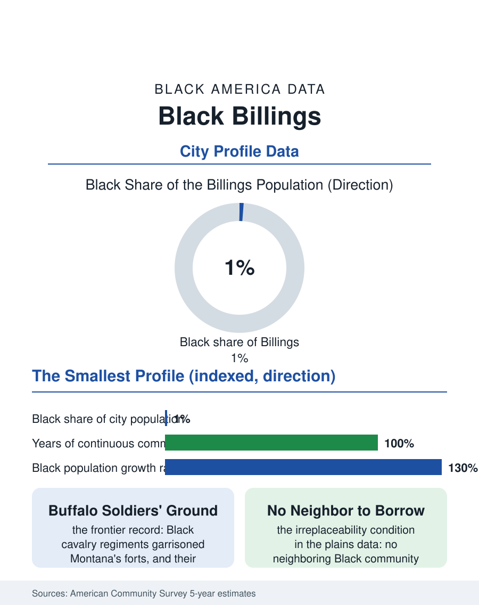

Black Cities
The Smallest File: Black Billings
Fifteen hundred people in Montana's largest city, descended from cavalry garrisons and railroad towns, still holding the atlas's smallest file open. The Billings file.

Billings' Black community numbers on the order of fifteen hundred people in Montana's largest city, around one percent of its hundred eighty thousand, and the state's Black population, a few thousand statewide, is the smallest in this atlas. The census counts a community descending from the cavalry regiments, the railroad towns, and the homestead era, maintained across a century of Montana winters by a handful of institutions. This article reads the Billings file.
Buffalo Soldiers and the Northern Pacific
Montana's Black history is written in the frontier's own ink. The Black regulars of the cavalry and infantry regiments, the Buffalo Soldiers of the plains campaigns, garrisoned the territory's forts, and Black troopers were stationed at posts across Montana for decades, some settling at their service's end. The Northern Pacific and Great Northern railroads carried the next layer, porters and service workers in the division-point towns, and the homestead era drew Black farm families under the same land laws that populated the plains, though in Montana's case in scattered dozens rather than Oklahoma's towns. Billings, founded as a railroad town in the Yellowstone valley, held the state's largest concentration by default, its Black families working the rails, the sugar beet refinery, the hospitals, and the service economy of the region's trade center. The community's institutions condensed to the classic minimum and held there: a historic congregation, a barbershop tradition, the statewide NAACP presence maintained by families whose names recur across the century's records, an institutional persistence out of all proportion to the counts, in the pattern of the Boise and Cheyenne files.
The Numbers in the Yellowstone Valley
The American Community Survey's Billings estimates carry the small-population asterisk in heavy type: margins of error wider than many of the estimates themselves, among the widest in this atlas, and the file therefore reads trends rather than points. The community is working and military-adjacent, the region's energy economy and its medical center, Billings being the hospital hub for a vast rural territory, employ its members alongside retail and the public sector, and the population's growth in the recent cycles is the file's main quantitative fact, rising from its tiny base at rates comparable to the state's overall boom, with Montana State University Billings and the region's growth drawing a young layer the historic community lacked. African immigrant families, arriving through the region's employment channels and the refugee resettlement network that serves the northern plains, add the newest chapter, so that Billings' Black community, like Boise's, is now substantially a convergence of centenarian local roots and very recent arrivals. Housing in the trade center remained comparatively affordable until the pandemic-era surge repriced the valley as it did the whole interior West, and the small homeowner base holds ground in the older neighborhoods near downtown.
The Smallest File's Standing
Billings poses the atlas's existence question at its purest: what does a community of fifteen hundred, one percent, in the least Black state in the union, need to remain a community rather than a residue? The record answers with the same instruments as everywhere, at minimum scale: a congregation that has never closed, a Juneteenth observed as a regional rather than municipal event, a network of families whose mutual knowledge is total, and a political presence that is personal, school board and council service by known citizens, rather than electoral arithmetic. The plains files share a distinctive condition the denser ones never face: there is no neighboring Black community to merge with, borrow from, or retreat to, the next congregation of any size being hours away in every direction, so the institutions carry an irreplaceability that shows in their survival record. The forward file is the region's growth: the Yellowstone valley's economy, energy, medicine, and the outdoor West's migration, is adding people at the fastest pace in the state's history, and the Black share of that growth will decide whether Billings' community becomes a Spokane-scale outpost or remains the atlas's smallest standing file. The census counts fifteen hundred. The record counts a hundred and forty years of not leaving, through winters that tested every settlement on the plains, and the file's judgment honors the arithmetic that matters: they are still there, and the church doors still open, and in Montana that has always been the whole argument.
More in Black Cities
Black Atlanta: Population, Distribution, and Growth of a Black Metropolis
Metro Atlanta holds more than two million Black residents — roughly one in three, second only to New York. The suburban distribution, migration history, and composition of Black Atlanta in the census data.
Black New York: The Largest Black Population in America
The New York metropolitan area holds about 3.4 million Black residents — more than any metro in the nation — and the city itself about two million. The census profile.
Black Washington: The District and the Metro
The Washington metro holds about 1.6 million Black residents, and the District itself — long a majority-Black city — now records a Black share near 41 percent. The census profile.
Source: U.S. Census Bureau, American Community Survey 5-year estimates for Billings, MT; Montana Historical Society records.